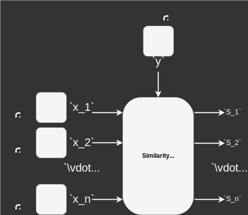
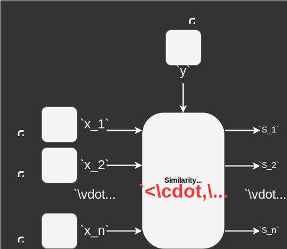

Private Image Retrieval
Computer Vision over Homomorphically Encrypted Data
CVPR 2025 Tutorial
June 12, 2025
Retrieval in Computer Vision
Device unlocking and payment

Enhanced visual photo search
Face recognition search engine
Most Retrieval tasks are based on Embeddings

Embeddings are not secure
Embeddings are vulnerable to inversion attacks and reveal personal information


Fully Homomorphic Encryption
Embedding protection for a preserved accuracyFHE Applications in computer vision and beyond
Private Image-Image (Face Recognition)

Private Text-Text (RAG)

Private Text-Image (CLIP)
Embedding-based Retrieval Boils Down to measuring Similarities

Similarity is usually computed as the inner product of embeddings (normalized).
Main FHE Integration Challenge in Private Image Retrieval
Enhancing the efficiency and scalability of similarity measures under FHE
Packing scheme selection
Minimize #Mult and #Rot

Avoid bootstrapping

Private Image-Image
(Face Recognition: Search)Face recognition pipeline

Embedding attacks in face recognition

FHE Integration Challenges in face search

We need an efficient and scalable inner product under FHE.
Packing scheme selection
Minimize #Mult and #Rot
Avoid bootstrapping
SecureFace: Inner Product with one homomorphic multiplication


- Introduced in FHE-based face matching [B18].
- Encrypted inner product $$ct = \left[\!\left[ \mathbf{x} \right]\!\right] \times \left[\!\left[ \mathbf{y} \right]\!\right] = \left[\!\left[ (x_1 y_1, \cdots, x_d y_d) \right]\!\right]$$ $$\left[\!\left[ < \mathbf{x},\mathbf{y}>\right]\!\right] = \sum_{i=1}^{\log_2(d)} \text{rot}(ct, 2^i)$$
- Runs in $31.22$ ms for 128 bits security level.
Packing scheme
Complexity
| $\log_2(d)-1$ | $1$ | $\log_2(d)$ |
Bootstrapping: not needed
Reducing latency
$\Downarrow$
Reducing multiplications and rotations.
Idea to eliminate multiplications: Pre-computing IP into a Lookup table


MFIP lookup table applies this idea to reduce latency in face matching.
How to generate the MFIP Lookup table?


MFIP: Inner Product with zero homomorphic multiplication
- 2nd generation of practical FHE-based face matching [BHV+23].
- Preserves inner product accuracy.
Packing scheme
Complexity
| $\log_2(d)-1$ | $0$ | $\log_2(d)$ |
Bootstrapping: not needed
Effect of Eliminating homomorphic multiplications on Latency
Removing multiplications decreases latency by half.
Is this efficiency gain enough to scale up to search?
Packing scheme
Bootstrapping: not needed
SecureFace Complexity
| $\log_2(d)-1$ | $1$ | $\log_2(d)$ |
MFIP Complexity
| $\log_2(d)-1$ | $0$ | $\log_2(d)$ |
Two things to consider for search
- Scalability of the horizontal packing
- Complexity depends on $d$.
Packing Approaches for face Search
- Analysis of the special case of #References = Ciphertext capacity

Face Search using advanced Horizontal packing
- Runs $1:1000$ in $218.18s$
- Homomorphic multiplications are sequentially computed.
Packing scheme
Complexity
| $d \cdot \left\lceil \frac{d \cdot m}{c} \right\rceil$ | $\left\lceil \frac{d \cdot m}{c} \right\rceil$ | $(d-1) \cdot \left\lceil \frac{d \cdot m}{c} \right\rceil$ |
Bootstrapping: needed
HERS: Face Search using Vertical packing

Homomorphic multiplications are computed in parallel.
Packing scheme
Complexity
| $(d-1) \cdot \left\lceil \frac{m}{c} \right\rceil$ | $d \cdot \left\lceil \frac{m}{c} \right\rceil$ | $0$ |
Bootstrapping: not needed
MFIP Search: Face Search with zero homomorphic multiplication

Only homomorphic additions are used.
Packing scheme
Complexity
| $(d-1) \cdot \left\lceil \frac{m}{c} \right\rceil$ | $0$ | $0$ |
Bootstrapping: not needed
Can search efficiency be further improved?
Packing scheme
Bootstrapping: not needed
HERS Complexity
| $(d-1) \cdot \left\lceil \frac{m}{c} \right\rceil$ | $d \cdot \left\lceil \frac{m}{c} \right\rceil$ | $0$ |
MFIP Search Complexity
| $(d-1) \cdot \left\lceil \frac{m}{c} \right\rceil$ | $0$ | $0$ |
Their complexity still depends on $d$.
Dimensionality reduction can further reduce latency

Dimensionality reduction reduces $d$ $\implies$ less homomorphic operations
Effect of the dimensionality reduction on search Accuracy (Rank-1)
Effect of the dimensionality reduction on search CPU runtime
Lookup table-based approach is practical (1:1M in $1.28s$)
Today FHE runs on GPUs
Bringing practical speed to secure computationMFIP Search Speed at scale using a single GPU (A100)
FHE-based search takes $5min$ for a 1 Billion vector gallery with up to 512-dim
Summary of FHE-based face recognition Search solutions
| Solutions | Application | $K$ | $\#M_{HE}$ | $\#R_{HE}$ | $\#A_{HE}$ | Storage | Protected Reference | Protected Probe | Runtime (1:1Million) |
|---|---|---|---|---|---|---|---|---|---|
| SecureFace (linear) | Biometric matching | $m$ | 1 | \(\log_2 \left( \frac{\text{RingDim}}{2} \right)\) | \(\log_2 \left( \frac{\text{RingDim}}{2} \right)\) | \(d \cdot m\) |
Encrypted
|
Encrypted
|
8.67h
|
| MFIPv2 (linear) | Biometric matching | \(m\) | 0 | \(\log_2 \left( \frac{\text{RingDim}}{2} \right)\) | \(\log_2 \left( \frac{\text{RingDim}}{2} \right)\) | \(\left( \sum_{i=1}^{d} N_i \right) \cdot m\) |
Permuted & Encrypted
|
Permuted
|
4.7h
|
| BOK'+22 | Biometric search | \(\left\lceil \frac{d \cdot m}{c} \right\rceil\) | 1 | \(d - 1\) | \(d\) | \(\left\lceil \frac{d \cdot m}{c} \right\rceil\) |
Encrypted
|
Encrypted
|
12.86h
|
| HERS | Biometric search and RAG | \(\left\lceil \frac{m}{c} \right\rceil\) | \(d\) | 0 | \(d - 1\) | \(d \cdot \left\lceil \frac{m}{c} \right\rceil\) |
Encrypted
|
Encrypted
|
38.37s
|
| BHV+'25 | Biometric search and CLIP | \(\left\lceil \frac{m}{c} \right\rceil\) | 0 | 0 | \(d - 1\) | \(\left( \sum_{i=1}^{d} N_i \right) \cdot \left\lceil \frac{m}{c} \right\rceil\) |
Permuted & Encrypted
|
Permuted
|
1.28s
|
Private Text-Text
(Text Embedding-based Retrieval in RAG)Think text embeddings are private? Research shows otherwise
Storing embeddings instead of raw text can
still leak confidential data.

RAG boosts customized LLMs using external vector DBs BUT insecurely
Vulnerabilities healthcare-based RAG
- RAG lacks access control and is vulnerable to embedding inversion and prompt injection data extraction attacks, exposing sensitive information from documents with restricted access.
Private text embedding retrieval in RAG
SecureRAG: End-to-end secure retrieval-augmented generation

FHE prevents text embedding inversion attacks BUT lacks access control.
$\Downarrow$
FHE is paired with attribute-based encryption (ABE) to secure RAG end-to-end.
Performance of Private text embedding retrieval in SecureRAG
SecureRAG preserves accuracy.
SecureRAG is $13.6\times$ faster than RemoteRAG, which takes $0.68$s on two
GPUs to retrieve $5$ documents out of $160$.
Private Text-Image
(CLIP Embedding-based Retrieval)CLIP uses inner product to compare text and image embeddings
Can MFIP lookup table be used over CLIP embeddings?
No, MFIP assumes uniformity over the unit $d$-Ball.
No, MFIP assumes uniformity over the unit $d$-Ball.
Text and image CLIP features empirically follow $\mathcal{N}(0,1)$
Feature from image CLIP embedding
Feature from text CLIP embedding
ScoreUP lookup table supporting CLIP-like embeddings

ScoreUP lookup table approximate CLIP features' PDF by $\mathcal{N}(0,1)$.
Performance of ScoreUP lookup table for pre-computing IP
ScoreUP achieves performance similar to that of IP as the feature quantization level $(2^{\text{bits}})$ increases.
Takeaways
FHE is no longer just secure BUT SLOW ...
FHE is fast and meets scale
1B private records in $5min$ on 1 GPU
FHE is fast and meets scale
1B private records in $5min$ on 1 GPU
Private Image-Image (FR)
Private Text-Text (RAG)
Private Text-Image (CLIP)